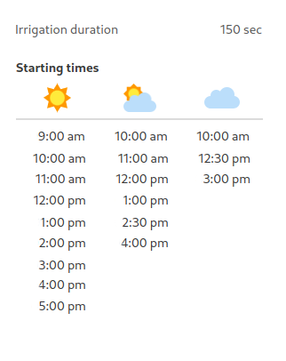

Episode 8 of 15 · June 19, 2025
Rebalance plants by tweaking irrigation
We need to know if soil is too wet for too long, which is a signal for plants to grow leaves rather than fruits.
Tragedy has struck.
Some tie-wraps broke under the heavy weight of their plants.
5 were confirmed dead. 30 pounds were harvested green. They estimate the total potential loss to 100 pounds.

What’s good, though:
If they were to harvest 100 pounds out of 5 plants, that means they are on their way to yield 5.4 lbs/sq.ft !!
Remember, this year’s target is 5 lbs/sq.ft.
Blossom drop:
Contrary to what we thought, the fruit set has not increased. Plants are back to blossom-dropping. Even if the stem is at a good AA battery size.

So problem is not temperature.
Since several fruits had cracked, and suckers grow on cluster, we are going to dig into irrigation.
They have already reduced the amount of water by reducing the number of leaves in the Orisha app. This is a good idea. Since cracking happens when there is too much water in the soil while the plants are not transpiring enough.
How to verify if irrigation is ok?
We need to know if soil is too wet for too long, which is a signal for plants to grow leaves rather than fruits.
To verify this, we need to put our fingers in the soil before the first irrigation. That means 8:30 a.m. for Ghost House.
If the soil is wet, we will need to give the last irrigation earlier. So the soil has time to dry during the night.
We are working on creating a slider that will simply adjust the last irrigation to control the energy allocation. But in the meantime, we would need to get out of the automatic irrigation program and create a timer program.
Here is a recommendation:

If the soil is dry at 8:30 a.m., we need to make sure we give enough water throughout the day. At noon, leaves should be cooler than the air when we touch them. If they’re the same temperature as the air, they miss water. Crank up irrigation a bit, and verify the next day.
There it is. Sorry, Allison and Drew for your losses, but it enables us to confirm you are on track to beat your target! Looking forward to seeing what your irrigation tests will result in.